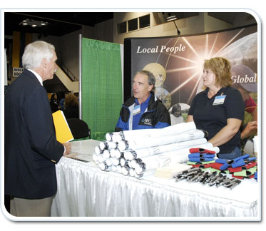

The first step to building credibility is to give a great first impression. The initial impression of NRCS will include the physical and aesthetic presentation of the booth, materials, and yourself. Make sure you are dressed appropriately, representing the culture of the agency and the event.
Start by introducing yourself to the event organizers and getting situated in your area for the event. Allow plenty of time for set-up and be there early enough before the event begins that you’re not still getting situated when people arrive.
When setting up your presentation or booth, make sure materials are organized in an appealing manner—arrange the brochures and give-a-ways neatly, rather than just piling them in stacks. Ensure the imagery and photos you use are of actual NRCS employees performing their jobs. Place give-a-ways strategically on the display to bring potential candidates close where you can engage them, and where they’ll see recruitment materials like pamphlets and brochures. Remember that the materials should relate to the event and the type of candidate you intend to recruit. Put more relevant materials toward the front of the display.